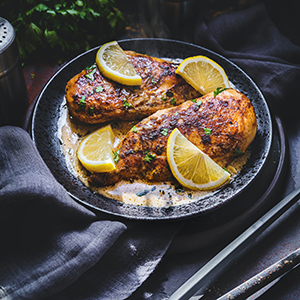

Lemon-Garlic Chicken
If you love lemon and garlic, you'll love this chicken main dish recipe whether you're on a keto diet or not. It's delicious with roasted asparagus on the side. Link
- 2 tablespoons vegetable oil
- 4 bone-in, skin-on chicken thighs
- salt and pepper to taste
- ½ medium onion, thinly sliced
- 4 garlic cloves, minced
- 1 cup chicken broth
- 3 tablespoons fresh lemon juice
- 2 tablespoons butter or margarine
- ½ teaspoon thyme leaves
- ⅛ teaspoon salt
- Season chicken thighs with salt and pepper on both sides; add to Instant Pot®. Cook one side at a time until both sides of the chicken are a golden brown, 3 to 4 minutes per side. Remove chicken from the pot and set aside.
- Add onion and sauté for 1 minute. Add garlic and cook for 1 more minute. Pour in white wine and stir to scrape brown bits from the bottom of the pot. Stir in chicken broth and lemon juice; bring to a boil and cook until broth has reduced slightly, 2 to 3 minutes. Turn off the Sauté function.
- Return chicken Instant Pot®. Close and lock the lid. Select High pressure according to manufacturer's instructions; set timer for 10 minutes. Allow 10 to 15 minutes for pressure to build.
- Release pressure using the natural-release method according to manufacturer's instructions, for 10 minutes. Release remaining pressure carefully using the quick-release method, about 5 minutes. Unlock and remove the lid.
- Remove chicken from the pot and set aside. Select the Sauté mode and bring sauce to a boil. Whisk in butter or margarine, heavy cream, salt, and thyme. Cook until sauce has thickened slightly, 2 to 3 minutes. Serve chicken drizzled with the sauce.